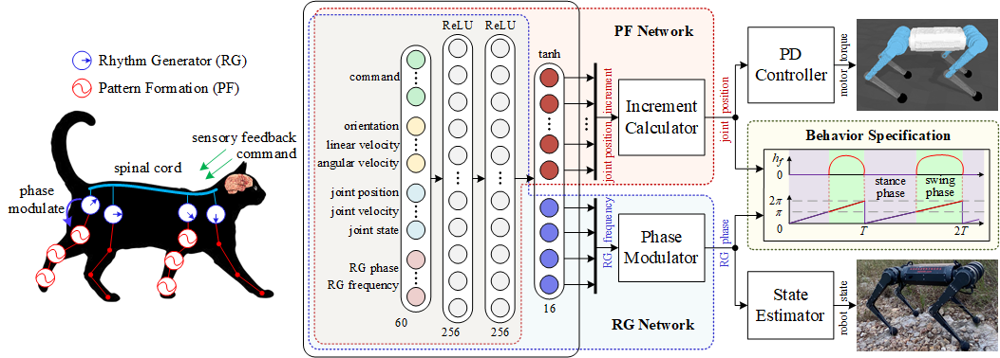

Bio-Inspired Rhythmic Locomotion for Quadruped Robots
Jiapeng Sheng1, Yanyun Chen1, Wei Zhang1, Ran Song1, Teng Chen1, Yu Zheng2, and Yibin Li1
1School of Control Science and Engineering, Shandong University, 250061, Jinan, China
2Tencent Robotics X, Shenzhen, Guangdong Province, China
Abstract
The mechanisms of locomotion in mammals have been extensively studied and inspire the related researches on designing the control architectures for the legged robots. Reinforcement learning (RL) is a promising approach allowing robots to automatically learn locomotion policies. However, careful reward-function adjustments are often required via trial-and-error until achieving a desired behavior, as RL policy behaviors are sensitive to the rewards. In this paper, we draw inspiration from the rhythmic locomotion behaviors of animals and propose a new control architecture by incorporating a rhythm generator to naturally stimulate periodic motor patterns, which actively participates in the timing of phase transitions in the robot step cycle. To speed up training, we use the joint position increments rather than the conventional joint positions as the outputs of the RL policy. During deployment, the rhythm generator can be reused for the state estimation of quadruped robots. We validate our method by realizing the full spectrum of quadruped locomotion in both simulated and real-world scenarios.

The proposed learning framework can be divided into two components: a bio-inspired control architecture consisting of RG and PF networks (left), and the new action space of joint position increments (right).